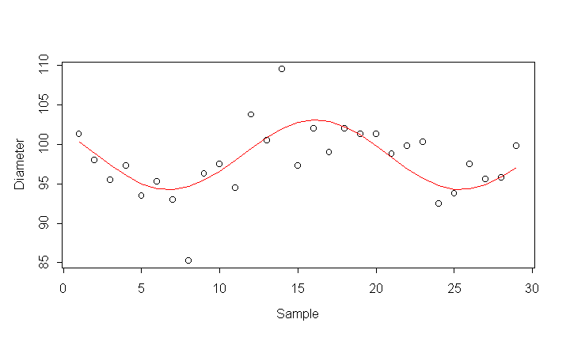

| / Home |
Keywords: time series, sum of sinusoids, discrete spectra, control chart
The data give 29 consecutive measurements on the inner diameter of a landing gear triunion. Each value given here is the average of four original observations.
| Variable | Description | ||
| Diameter | Average inner diameter | ||
Data File (tab-delimited text)
| Cowden, D. J. (1957). Statistical Methods in Quality Control. Prentice-Hall, Englewood Cliffs. |
Spurrier, J. D., and Thombs, L. A. (1990). Control charts for detecting cyclical behavior. Technometrics 32, 163-170. |
Smyth, G. K. (2000). Employing symmetry constraints for improved frequency estimation by eigenanalysis methods. Technometrics 42, 277-289. |
Spurrier and Thombs (1990) showed that the data show some evidence of periodic behavior, which is one way that a process can be out-of-control. Here we fit one sinusoidal signal to the data.

|
Home - About Us -
Contact Us Copyright © Gordon Smyth |